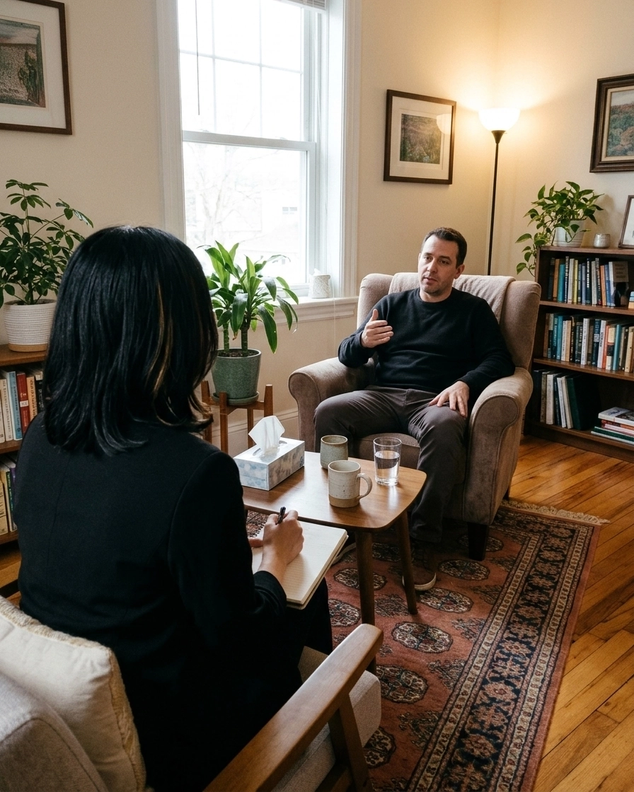
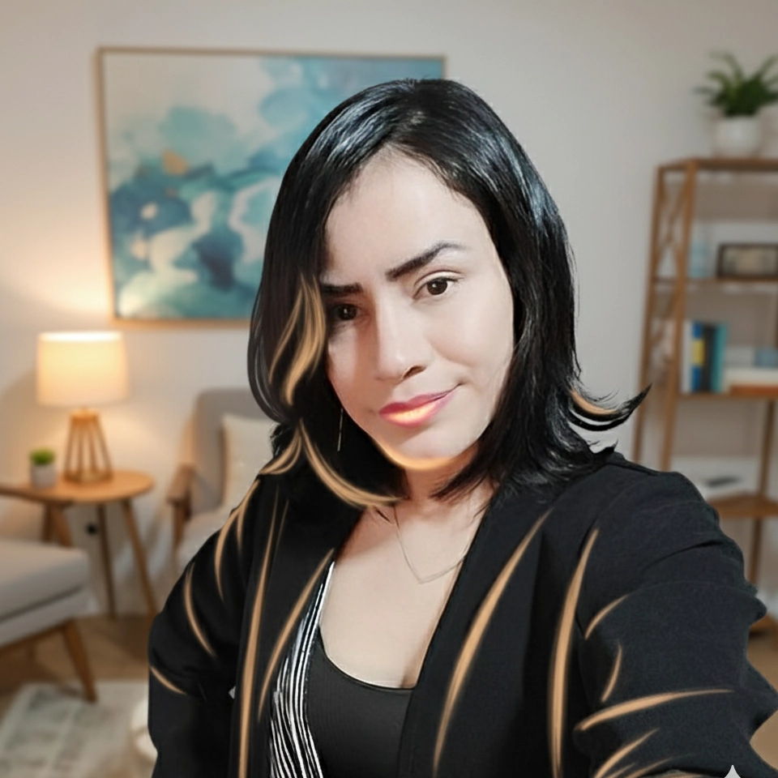

TCC · Psicoterapia · Medellín
Acompañamiento psicológico para ansiedad, depresión y estrés. Sesiones de 55 minutos, presenciales u online, con un proceso claro y a tu medida.
T.P. N.º 262453 · Colpsic — casi 4 años de experiencia clínica

01 · Método
La terapia cognitivo conductual es estructurada y basada en evidencia: identifica los pensamientos y conductas que sostienen tu malestar y los trabaja con herramientas concretas.
Empezar mi procesoNos conocemos. Escucho tu motivo de consulta y resolvemos tus dudas — sin compromiso de permanencia.
Historia clínica y lectura de tu caso desde el enfoque cognitivo conductual.
Definimos objetivos, periodicidad y metas claras para tu intervención psicológica.
Presencial en Laureles u online. Revisamos tu avance sesión a sesión.

02 · Sobre mí
Psicóloga cognitiva conductual con maestría en clínica psicológica. Trabajo con una mirada integrativa: la TCC es mi base, pero aplico más de una corriente según lo que cada consultante necesita. En consulta desde mayo de 2023.
03 · Tarifas y modalidades
Cl. 44A #68A-106, Laureles – Estadio, Medellín, Antioquia. Un espacio tranquilo y privado para tu proceso.
Ver en el mapa →Teleconsulta por videollamada con la misma duración y calidad. Ideal si estás fuera de Medellín o prefieres la comodidad de tu casa.
Consultar disponibilidad →04 · Preguntas frecuentes
$130.000 COP por sesión de 55 minutos. El mismo valor aplica para modalidad presencial y online.
Sí. Puedes asistir al consultorio en Laureles–Estadio o tomar la sesión por teleconsulta. Tú eliges la modalidad que mejor se ajuste a tu rutina.
La base es la terapia cognitivo conductual (TCC), con una perspectiva integrativa: aplico más de una corriente según lo que cada persona necesita.
Sí. Trabajo con niños, adolescentes, jóvenes y adultos, adaptando el tratamiento a cada etapa de vida.
Escríbeme por WhatsApp al 316 785 1574 y coordinamos día y hora. Es el paso más simple para empezar.
Da el primer paso
o si prefieres: 316 785 1574 · soporte@ayudapsicologica.co